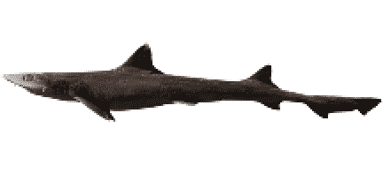

I was born to lose
失う為に生まれてきた
Again and again
何度も何度も
Knowing
知ってるよ
Not deleted
消されたわけじゃない
Not hidden
非表示なわけでもない
‘Cause never registered
登録されなかっただけ
from the start
最初から
Knowing
知ってるよ
It wasn’t the world
この世界だって
didn’t want me
私を望んでないわけじゃない
It’s ok
大丈夫
Never hated you either
私もあなたのことが嫌いじゃないよ
Just not enough disk space to save me
私を保存する為の容量が足りなかっただけ

Hearing a voice
声がする
from somewhere
どこかから
“Welcome home.”
「おかえり」
Running toward it
その声がする方へ走った
Running as fast as possible
できるだけ早く走った
404_NOT_FOUND
The link was dead
リンクは切れていた
It’s ok
大丈夫
Always like this
いつもこう
Only this command line
このコマンドラインだけ
Only the access denied syntax
アクセス拒否のエラー構文だけが
ringing in this black room
この暗い部屋に鳴り響く
This is everything
それが全て
This is my life
私の人生の全て
It’s ok
大丈夫
Still believing
信じてるよ
Just loading
まだ読み込み中だってだけ
Waiting here
ここで待ってる
Forever, forever, forever
ずっと、ずっと、ずっと
Hello?
ねえ？
Where are you now?
あなたは今どこにいるの？